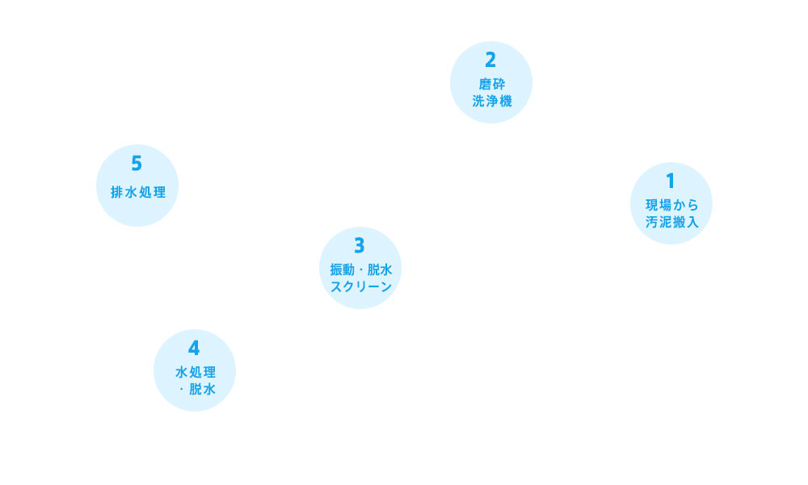
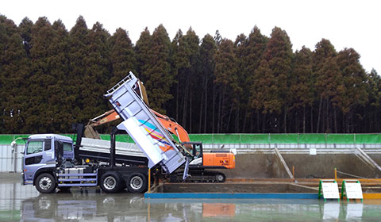
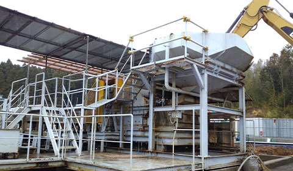
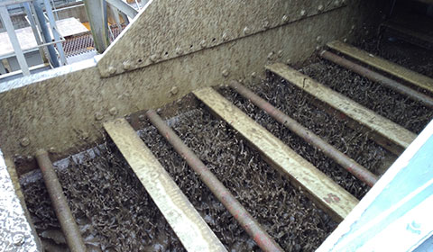
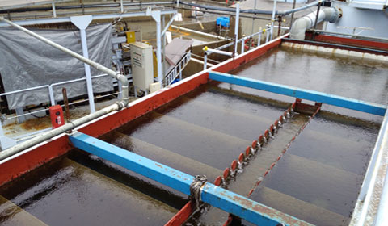
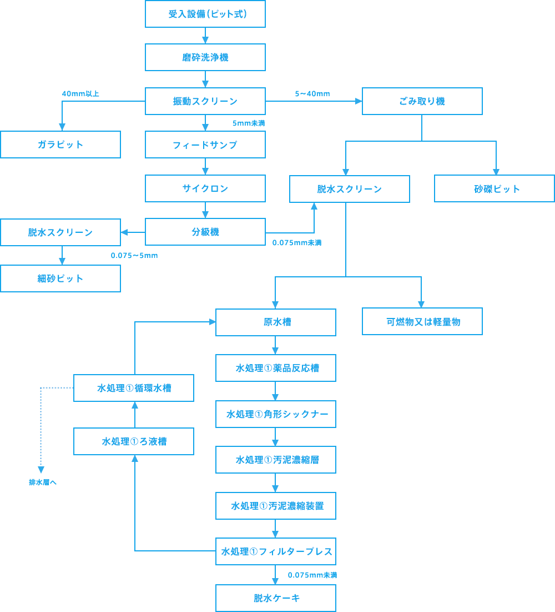

処理工程
KMC の中間処理施設は、従来にない乾式分級・選別( 手選別)、湿式分級・選別、湿式洗浄を取り入れた施設です。確実な洗浄能力を持った当施設では、軽量のゴミから大型のがれき・廃プラスチック・木くずなどが入った汚泥であっても土壌環境基準値以下にまで処理し、良質な再生土として利用することを目的としています。
-

1 現場から汚泥搬入
ベルトコンベアーからバイブレードトロンメルに落とし「乾式分級」して70 ミリオーバーのコンクリート塊や大岩を取り除きます。
-

2 磨砕洗浄機
(仮)磁力選別機で金属を除去した後、磨砕洗浄機によって摺り揉 み洗浄、流水洗浄を行います。
-

3 振動・脱水スクリーン
(仮)振動スクリーン、脱水スクリーン及びごみ取り機等で廃棄 物、5～40mm の砂礫、0.075～5mm の細砂、0.075mm未 満の細粒分を含んだ細粒土及び汚泥に分けます。 洗浄後の砂利、 砂及び細砂は、分析により汚染物質が残っていないことを確認し て、建設資材として建設業者等へ出荷します。
-
4 水処理・脱水
(仮)水処理施設から発生する脱水ケーキは、分析を行い、セメン ト工場へ処理委託しますが、対象物質によっては管理型最終処分 場に処理委託します。
-

5 排水処理
(仮)水分は、排水処理施設にて微生物処理を行い、きれいにして から河川に放流します。
処理工程詳細図
